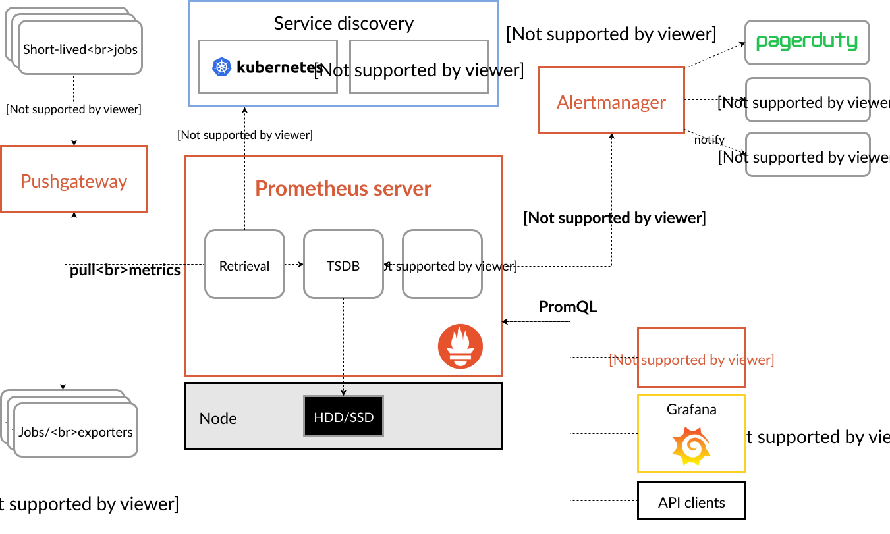
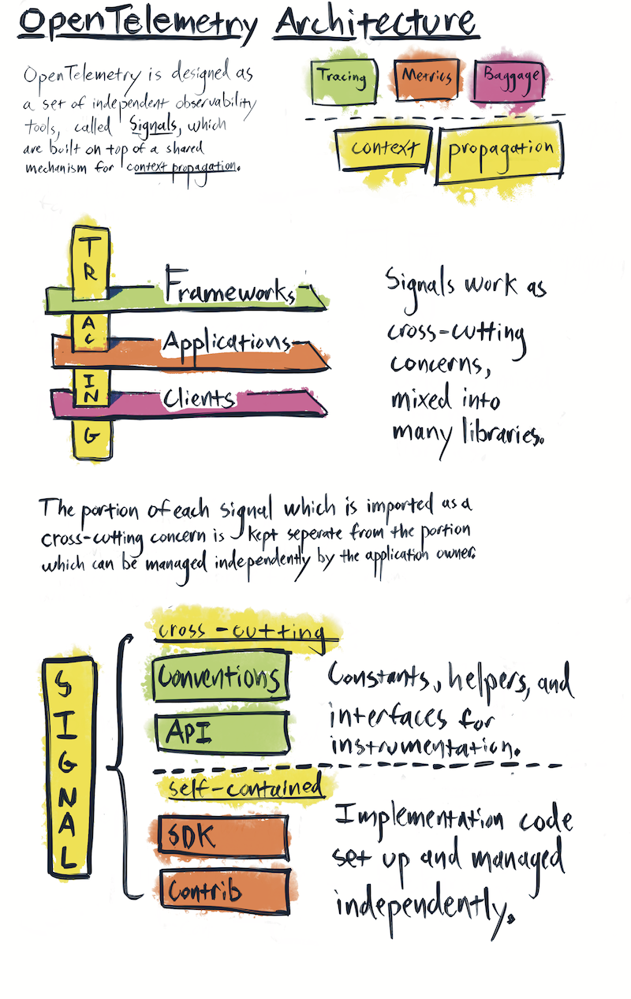

Monitoring vs Observability: The Real Difference
After building observability stacks for 6 different organizations, I've learned that most teams confuse monitoring with observability. They're not the same thing.

Monitoring (Known Unknowns)
Dashboards and alerts for things you expect to go wrong. CPU > 90%? Alert. Error rate > 1%? Alert. You defined the failure mode in advance.
Observability (Unknown Unknowns)
The ability to ask arbitrary questions about your system without deploying new code. "Why are requests from EU users 3x slower on Tuesdays?" You didn't predict this — but you can investigate it.
Observability requires three pillars working together: metrics tell you something is wrong, logs tell you what went wrong, and traces tell you where it went wrong.
The Three Pillars
What's happening now?
What happened in detail?
Where did it happen?
Prometheus: Metrics That Matter
Scrape Configuration
# prometheus.yml — production config
global:
scrape_interval: 15s
evaluation_interval: 15s
external_labels:
cluster: production-us-east-1
environment: production
scrape_configs:
# Kubernetes service discovery
- job_name: kubernetes-pods
kubernetes_sd_configs:
- role: pod
relabel_configs:
# Only scrape pods with annotation prometheus.io/scrape: "true"
- source_labels: [__meta_kubernetes_pod_annotation_prometheus_io_scrape]
action: keep
regex: true
- source_labels: [__meta_kubernetes_pod_annotation_prometheus_io_path]
action: replace
target_label: __metrics_path__
regex: (.+)
- source_labels: [__meta_kubernetes_pod_annotation_prometheus_io_port, __meta_kubernetes_pod_ip]
action: replace
target_label: __address__
regex: (.+);(.+)
replacement: $2:$1
# Node exporter for host metrics
- job_name: node-exporter
kubernetes_sd_configs:
- role: node
relabel_configs:
- action: replace
target_label: __address__
regex: (.+):(.+)
replacement: $1:9100Recording Rules for Performance
Raw queries on high-cardinality metrics are slow. Recording rules pre-compute expensive queries every evaluation interval.

# recording-rules.yml
groups:
- name: service_slos
interval: 30s
rules:
# Error rate per service (pre-computed)
- record: service:http_requests_error_rate:5m
expr: |
sum(rate(http_requests_total{status=~"5.."}[5m])) by (service)
/
sum(rate(http_requests_total[5m])) by (service)
# P99 latency per service
- record: service:http_request_duration_seconds:p99_5m
expr: |
histogram_quantile(0.99,
sum(rate(http_request_duration_seconds_bucket[5m])) by (service, le)
)
# Request rate per service
- record: service:http_requests:rate5m
expr: sum(rate(http_requests_total[5m])) by (service)Alerting Rules
# alerting-rules.yml
groups:
- name: service_alerts
rules:
- alert: HighErrorRate
expr: service:http_requests_error_rate:5m > 0.01
for: 5m
labels:
severity: critical
annotations:
summary: "High error rate on {{ $labels.service }}"
description: "Error rate is {{ $value | humanizePercentage }} (threshold: 1%)"
runbook: "https://wiki.internal/runbooks/high-error-rate"
- alert: HighLatency
expr: service:http_request_duration_seconds:p99_5m > 2
for: 5m
labels:
severity: warning
annotations:
summary: "P99 latency > 2s on {{ $labels.service }}"
- alert: PodCrashLooping
expr: rate(kube_pod_container_status_restarts_total[15m]) * 60 * 15 > 3
for: 5m
labels:
severity: critical
annotations:
summary: "Pod {{ $labels.namespace }}/{{ $labels.pod }} is crash looping"Grafana: Dashboard Design Principles
USE and RED Method Dashboards
USE Method (Infrastructure)
For every resource (CPU, memory, disk, network):
- Utilization — % time busy
- Saturation — queue depth
- Errors — error count
RED Method (Services)
For every service endpoint:
- Rate — requests per second
- Errors — errors per second
- Duration — latency distribution
1) Top row: the 4 golden signals (latency, traffic, errors, saturation). 2) Use rate() not raw counters. 3) Show percentiles (p50, p95, p99), not averages — averages hide tail latency. 4) Time range: default to 6 hours, not 24. 5) Max 12 panels per dashboard — if you need more, split into sub-dashboards.
Real Prometheus Queries
# Service error rate (percentage)
sum(rate(http_requests_total{status=~"5.."}[5m])) by (service)
/
sum(rate(http_requests_total[5m])) by (service)
* 100
# P95 latency
histogram_quantile(0.95,
sum(rate(http_request_duration_seconds_bucket[5m])) by (le, service)
)
# CPU saturation (load average / CPU count)
node_load1 / count without(cpu) (node_cpu_seconds_total{mode="idle"})
# Memory utilization
1 - (node_memory_MemAvailable_bytes / node_memory_MemTotal_bytes)
# Disk I/O utilization
rate(node_disk_io_time_seconds_total[5m])
# Container CPU throttling
rate(container_cpu_cfs_throttled_periods_total[5m])
/
rate(container_cpu_cfs_periods_total[5m])OpenTelemetry: The Future of Instrumentation
OpenTelemetry (OTel) is the vendor-neutral standard for telemetry. It replaces Jaeger client, Zipkin client, Prometheus client libraries, and proprietary SDKs with one unified API. If you're starting fresh, use OTel.
Collector Configuration
# otel-collector-config.yaml
receivers:
otlp:
protocols:
grpc:
endpoint: 0.0.0.0:4317
http:
endpoint: 0.0.0.0:4318
prometheus:
config:
scrape_configs:
- job_name: otel-collector
scrape_interval: 10s
static_configs:
- targets: ['0.0.0.0:8888']
processors:
batch:
timeout: 5s
send_batch_size: 1024
memory_limiter:
check_interval: 1s
limit_mib: 512
spike_limit_mib: 128
attributes:
actions:
- key: environment
value: production
action: upsert
exporters:
prometheusremotewrite:
endpoint: "http://prometheus:9090/api/v1/write"
otlp/jaeger:
endpoint: "jaeger-collector:4317"
tls:
insecure: true
loki:
endpoint: "http://loki:3100/loki/api/v1/push"
service:
pipelines:
metrics:
receivers: [otlp, prometheus]
processors: [memory_limiter, batch]
exporters: [prometheusremotewrite]
traces:
receivers: [otlp]
processors: [memory_limiter, batch, attributes]
exporters: [otlp/jaeger]
logs:
receivers: [otlp]
processors: [memory_limiter, batch]
exporters: [loki]Auto-Instrumentation
OTel auto-instrumentation adds tracing to your app without code changes. It hooks into HTTP clients, database drivers, and framework middleware automatically.
# Python — zero-code instrumentation
pip install opentelemetry-distro opentelemetry-exporter-otlp
opentelemetry-bootstrap -a install
OTEL_SERVICE_NAME=order-service \
OTEL_EXPORTER_OTLP_ENDPOINT=http://otel-collector:4317 \
opentelemetry-instrument python app.py
# Node.js — add to your entrypoint
# npm install @opentelemetry/auto-instrumentations-node
NODE_OPTIONS="--require @opentelemetry/auto-instrumentations-node/register" \
OTEL_SERVICE_NAME=payment-service \
OTEL_EXPORTER_OTLP_ENDPOINT=http://otel-collector:4317 \
node server.jsDistributed Tracing: Finding the Needle
In a microservices architecture, a single user request might touch 8 services. When latency spikes, which service is the bottleneck? Traces answer this.
Trace Sampling Strategy
At 10K req/s, 100% sampling generates ~50GB/day of trace data. That's expensive to store and query. Use tail-based sampling: sample 1% of successful requests but 100% of errors and slow requests (>2s). This gives you the traces you actually need for debugging.
# Tail-based sampling in OTel Collector
processors:
tail_sampling:
decision_wait: 10s
policies:
# Always sample errors
- name: errors
type: status_code
status_code: { status_codes: [ERROR] }
# Always sample slow requests
- name: slow-requests
type: latency
latency: { threshold_ms: 2000 }
# Sample 1% of everything else
- name: probabilistic
type: probabilistic
probabilistic: { sampling_percentage: 1 }Log Aggregation: Structured Logging
Unstructured logs are useless at scale. You can't query "show me all errors for user X in the payment service" if your logs are free-text strings.
// Bad — unstructured
logger.info("Processing order 12345 for user john@example.com, amount $99.99")
// Good — structured JSON
logger.info("Processing order", {
orderId: "12345",
userId: "usr_abc123",
amount: 99.99,
currency: "USD",
traceId: span.spanContext().traceId, // Correlate with traces
service: "order-service"
})Every request gets a unique correlation ID (or use the trace ID from OpenTelemetry). Pass it through every service call in headers. When debugging, search logs by correlation ID to see the entire request flow across all services. Without this, debugging distributed systems is guessing.
Log Levels: Use Them Correctly
| Level | When to Use | Example | Alert? |
|---|---|---|---|
| ERROR | Something failed, needs attention | Database connection failed, payment declined | Yes |
| WARN | Unexpected but handled | Retry succeeded, cache miss, deprecated API called | If sustained |
| INFO | Normal operations | Request processed, user logged in, job completed | No |
| DEBUG | Detailed diagnostic info | SQL queries, request/response bodies | No (off in prod) |
Observability Cost Optimization
Observability can get expensive fast. Prometheus storage, log ingestion, trace storage — it adds up.
- Prometheus: Use recording rules to pre-aggregate. Drop high-cardinality labels you don't query. Set retention to 15 days locally, use Thanos/Cortex for long-term.
- Logs: 30-day hot retention, archive to S3 for compliance. Filter out health check logs at the collector level — they're 40% of log volume.
- Traces: Tail-based sampling (1% normal, 100% errors). Store traces for 7 days max.
Prometheus Federation for Multi-Cluster
# Central Prometheus scraping leaf clusters
scrape_configs:
- job_name: cluster-us-east-1
honor_labels: true
metrics_path: /federate
params:
match[]:
- '{__name__=~"service:.*"}' # Only recording rules
- '{__name__=~"kube_pod_.*"}' # Pod metrics
static_configs:
- targets: ['prometheus-us-east-1.internal:9090']
labels:
cluster: us-east-1
- job_name: cluster-eu-west-1
honor_labels: true
metrics_path: /federate
params:
match[]:
- '{__name__=~"service:.*"}'
static_configs:
- targets: ['prometheus-eu-west-1.internal:9090']
labels:
cluster: eu-west-1Observability Checklist
- Metrics: Prometheus with recording rules and 15-day local retention
- Logs: Structured JSON with correlation IDs, 30-day hot retention
- Traces: OpenTelemetry with tail-based sampling (1% normal, 100% errors)
- Dashboards: USE method for infra, RED method for services
- Alerts: Error rate, latency p99, saturation — with runbook links
- Correlation: Trace ID in every log line for cross-service debugging
- Cost: Filter health check logs, use recording rules, sample traces
- Vendor-neutral: OpenTelemetry Collector as the single telemetry pipeline